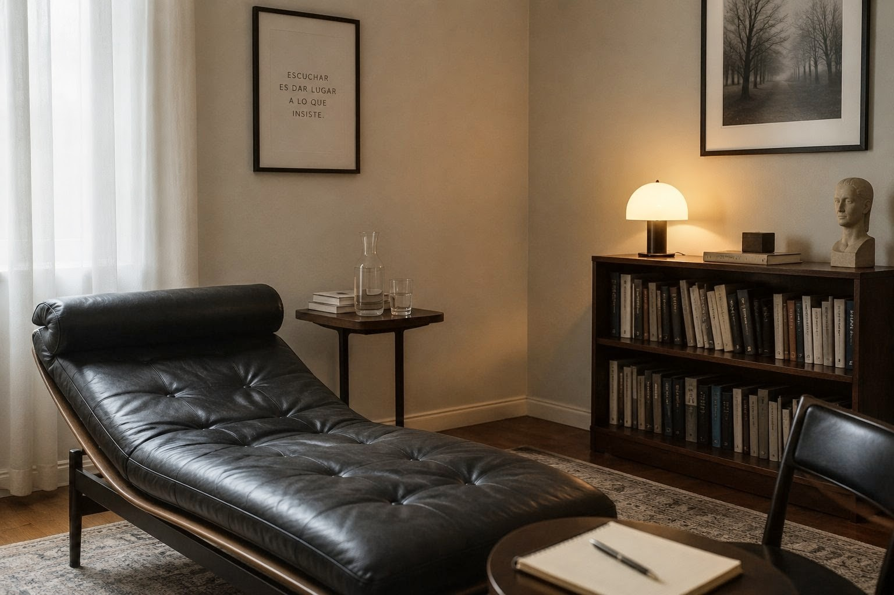
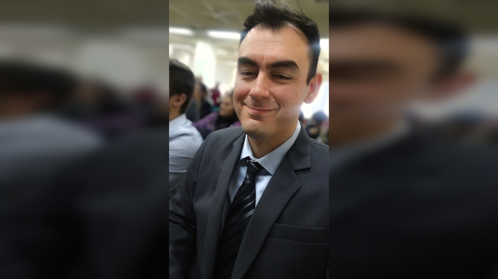

Ansiedad y angustia
Manifestaciones de malestar que pueden aparecer sin una causa consciente clara, afectando el cuerpo, el pensamiento o el descanso.
Atención psicológica online con enfoque psicoanalítico. Un espacio de escucha profesional, confidencial y respetuoso de los tiempos subjetivos.
Agendar primera consulta →La consulta psicológica puede ser un espacio para detenerse, poner en palabras aquello que genera malestar y comenzar a pensar de otro modo lo que está sucediendo.

Manifestaciones de malestar que pueden aparecer sin una causa consciente clara, afectando el cuerpo, el pensamiento o el descanso.
Momentos de quiebre, cambios o decisiones que interpelan los modos habituales de sostener la vida.
Procesos singulares de elaboración frente a pérdidas afectivas, separaciones o transformaciones significativas.
La atención se desarrolla completamente online, buscando sostener un encuadre clínico cuidado y acorde a cada proceso.

Desde donde estés, a través de una modalidad de atención flexible y confidencial.
Un espacio pensado para que puedas hablar de aquello que te sucede.
Un tiempo destinado al trabajo clínico y a la escucha de aquello que trae cada consulta.
Se acuerda de acuerdo con las características y necesidades de cada proceso.
El primer encuentro es, ante todo, un espacio para poder hablar de aquello que te trae a consultar. No es necesario llegar con todo claro ni saber exactamente qué decir.
Podés escribirme por WhatsApp para consultar disponibilidad, modalidad de atención y coordinar un primer encuentro.
En la primera entrevista podremos conversar sobre aquello que te lleva a consultar, tu situación actual y qué esperás encontrar en este espacio.
Si consideramos que este espacio puede ser adecuado para vos, acordamos la modalidad y frecuencia de trabajo para comenzar el proceso terapéutico.
La primera consulta no implica un compromiso inmediato. Es también una oportunidad para conocernos y pensar juntos si este espacio resulta adecuado para lo que estás atravesando.
Sí. La modalidad online permite sostener el encuadre clínico y el trabajo terapéutico, respetando la confidencialidad y la continuidad del proceso.
No. Muchas consultas surgen a partir de malestares cotidianos, dudas, angustias o situaciones que generan sufrimiento.
El valor se conversa de manera personal en el primer contacto, considerando el encuadre y las condiciones del tratamiento.
Absolutamente. Todo lo trabajado en sesión está protegido por el secreto profesional.
Textos sobre malestar, vínculos, ansiedad, pérdidas y distintas experiencias de la vida cotidiana desde una perspectiva psicoanalítica.
¿Por qué algunas situaciones parecen repetirse aun cuando sabemos que no nos hacen bien? Una aproximación al concepto de repetición desde el psicoanálisis.
Leer artículos →Si sentís que este espacio puede ayudarte, podés escribirme para coordinar una primera entrevista.
Contactar por WhatsApp
Soy Licenciado en Psicología, con formación en psicoanálisis y experiencia clínica en el ámbito hospitalario.
Concibo el espacio terapéutico como un lugar de escucha profesional, confidencial y sin juicios, donde aquello que genera malestar pueda ser puesto en palabras y pensado de manera singular.
La propuesta es poder detenerse, escuchar lo que sucede y encontrar, a través de la palabra, nuevas formas de abordar aquello que hoy resulta difícil de sostener.